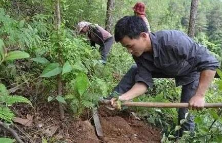
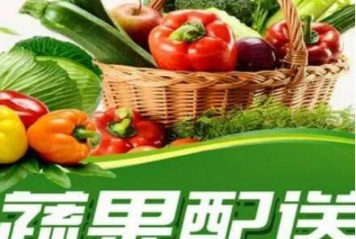
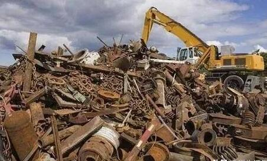

经常有人说:“对于农村人来说，最困难的事情就是赚钱。在农村，因为交通不方便，信息也比较闭塞，人口少，人流量也非常小，赚钱的渠道也比不是很多，而且还不是很方便。”那么事实真是这样吗？农村真的非常难赚钱吗？要我来说，根本不是这样的。
农村能赚钱的项目非常多，而且很多项目还少有人竞争，但是利润却非常惊人，另外还有一些商机根本就没有人发现，所以才会给人造成一种农村难赚钱的错觉。真正了解农村的人都会经常说:农村遍地都是财富，只要你懂得发掘，就能赚大钱。那么在农村都蕴藏着哪些商机呢？
一、种植药材
最近这几年，药材市场又非常火爆了，原因就是药材的市场缺口比较大，很多药材都呈现出了供不应求的状态。但是即使是这样，还是少有人愿意种植药材，因为很多人都认为，种植药材需要技术，很难种植成功。还有一些人担心种植出来后没有销路，怕收获越多，结果就赔得越多。事实上，现在种植药材这个行业的确非常暴利，很多品种的药材价格都是一涨再涨，单从价格方面来看，这个行业就非常不错。

另外大家最担心的销路问题其实也不是问题，现在都是信息时代了，供销信息很容易找到的，特别是药材这种东西，你去网上搜一下关键词，会搜出来很多收购商信息的，你可以一个一个去联系。还有，你也可以去各大药材市场，自己去找收购商谈，总之只要有货，不可能会没有销路的。所以我觉得这些担心都是多余的，我个人认为，种植药材真是一个相当不错的赚钱项目。
2、农业经纪人
什么是农业经纪人呢，说白了就是农产品的二道贩子升级版，如果把二道贩子形容成1.0版本的话，那么农业经纪人就是3.0以上的版本。
他们就像房地产中介人一样，主要工作就是把自己手中所掌握的产品信息跟外部市场对接起来，从而提供中间服务。做这个行业优点特别多，首先就是不用自己投钱，就能做好这个行业。
其次就是能累积自己的客户资源，打造自己的生意圈，如果自己有了稳定的客户圈后，还可以打造自己的实体生意。
还有就是农业经纪人的出现，确实帮助很多农民朋友解决了非常多的实际问题，另外也能帮助收购商找到合适的货源，同时还能让自己的钱包鼓起来。
做农业经纪人改变了传统的农产品经营方式，他们依靠网络资源或者是掌握了一些行业信息，所以他们能把农产品介绍并推广到全国去，而且能卖出高价。做这个行业，前期只需要一台电脑，就可以了，然后就是要多了解当地农产品的信息，这样才能把农产品推出去。这是一个很有发展前景的绿色创业项目。
3、绿色蔬菜配送
什么是绿色蔬菜配送呢？很简单，蔬菜配送就是以蔬菜为代表的农产品，在生产流通，到消费的整个过程当中，每一个环节都由专业的蔬菜配送公司，或者由个体户负责来完成。
这个模式首先由配送商去到各个生产基地去采购、批发瓜果蔬菜、家禽、肉类、蛋类等食材，然后通过车辆统一配送到单位、学校、食堂、餐馆、饭店等等，这个模式看起来简单，其实它的好处非常多。

比如开通了菜园、市场的蔬菜、农产品的转车配送，既能解决农民卖菜的劳动强度，也能使得农民更能找对项目，因为农民可以根据配送公司的需求来提前决定种植或者生产什么农产品。
还能使菜园和市场供需关系紧密结合，这个供需关系一旦打通，以后不会存在拿着钱买不到需要的货，更不会存在有货卖不出去的情况。
另外，若能开通在线送菜，更能满足主妇们烹饪时对营养和美味的需求。最重要的一点就是能帮助一些单位减少每天采购农产品的时间，还有在价格方面也有一定的优势，因为是直接连通地头跟消费者，中间商就少了，这样自然价格就低了。所以说，这个行业是非常不错的一个选择，很值得推荐。
4、废品回收
在农村，废品回收这个行业也蕴藏着非常巨大的商机，可能很多人说到废品回收行业，就会觉得这个行业不体面，甚至会觉得“就是一个收破烂的”很丢人。其实做废品回收这个行业，虽然脏了点，累了点，但是这个行业赚的钱真不少，同时，高收益还能让你感觉到这个工作的体面。

在农村做废品回收行业可以做的具体项目非常的多，我大致给大家分享几种利润比较高的，比如回收汽车三元催化器、回收废旧电动整车、回收泡沫、回收废旧玻璃酒瓶、回收接触器、回收胶鞋、回收废纸打包、回收废旧模板、回收废旧衣服、回收废旧轮胎、回收废旧手机、回收二手书籍、回收大棚薄膜、回收编织带、回收打包带、回收火花塞等等，这些项目看似很普通，其实这些项目都有一些我们外行不了解的情况，都非常赚钱，利润特别高。
以上就是今天我要给大家分享的内容，在农村其实有很多财富商机，我们没有发掘出来，想要从这些商机里面赚到钱就需要我们掌握的信息面比较宽，而且我们还需要注意这几点:1信息面要广，2要有预判能力，3要有长远规划，这样我们才能赚到别人赚不到的大钱。